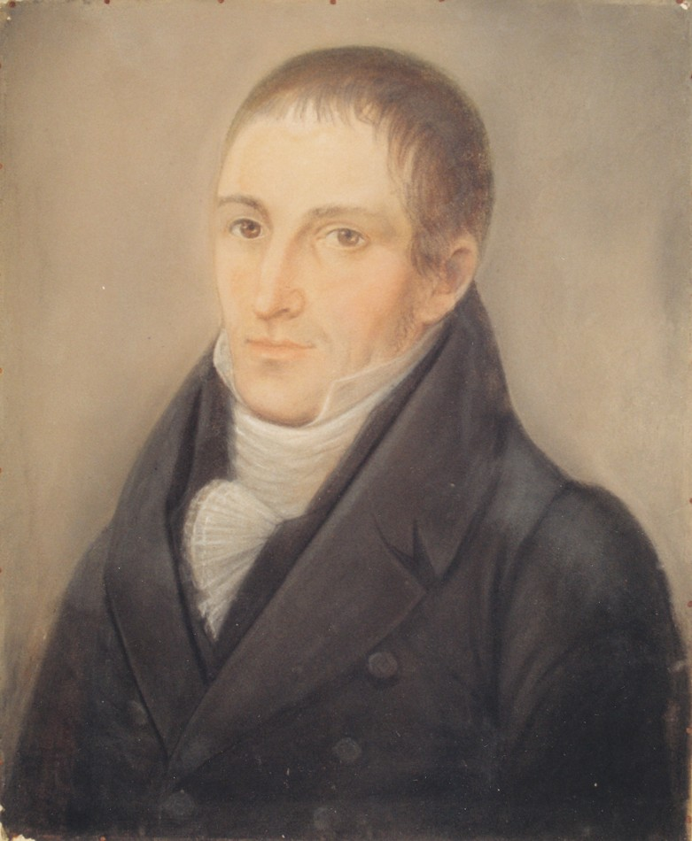
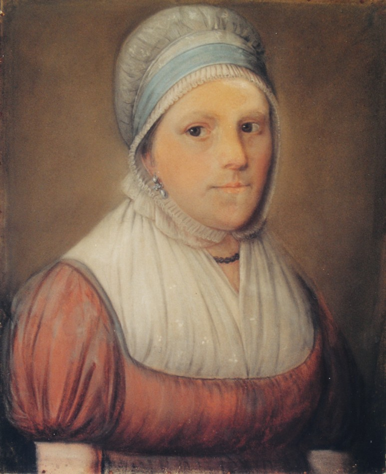
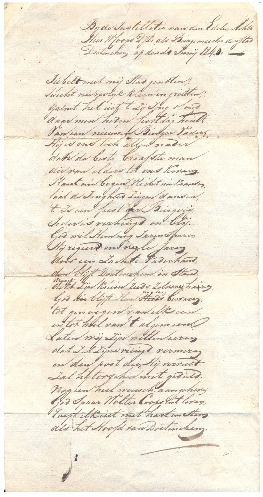

Biografie · Doetinchem
Wolter D.Jzn. Coops en Harmina Hesselink
Een gezin aan de Waterstraat en een burgemeestersbenoeming in 1843
Wolter Coops (1764–1847) en Harmina Hesselink (1767–1852) woonden met hun gezin aan de Waterstraat in Doetinchem. Naast hun huis dreef Wolter een zeepziederij. Hij zat al ruim dertig jaar in het stadsbestuur toen hij op 78-jarige leeftijd burgemeester werd.
‹ Alle biografieën en historische artikelenTwee portretten in pastel
Het Iconografisch Bureau registreerde de portretten als pendanten en schreef beide toe aan Th. Bohres. Op de kaarten staat bij beide dat ze ongemerkt zijn. De dagmaat, het zichtbare deel binnen de lijst, is bij Wolter 73 × 63 cm en bij Harmina 45 × 37 cm. Klik op de portretten om de foto’s op volledige resolutie te openen.




Een huwelijk in Zelhem
Wolter werd volgens Nederland’s Patriciaat op 30 september 1764 geboren in Doetinchem. Het doopregister van die stad noemt hem in september 1764, met Derk Jan Coops en Gerharda Mechtelina van der Horst. Gelders Archief, doopregister Doetinchem, folio 192.
Harmina was een dochter van Hendrik Hesselink en Henrietta Keppel. Haar overlijdensakte noemt Zelhem als geboorteplaats. Over de precieze datum in oktober 1767 lopen de publicaties uiteen. Het trouwboek van Zelhem vermeldt het paar op 15 november 1786, met de bruid onder de naam Hermina Hesselink. Er is ook een inschrijving in het Doetinchemse register, gedateerd 12 november. Trouwboek Zelhem, folio 78 · Trouwboek Doetinchem, folio 49.
Wolter en Harmina kregen twaalf kinderen. Hun zoon Herman Hendrik Timotheus maakte carrière bij de marine. Hun dochter Hermina, gedoopt op 20 oktober 1802 in Doetinchem, erfde in 1861 van haar zwager, predikant Johannes Oosterdijk, het Gelders Spijker in Arnhem. Tijdens haar eigenaarschap begon over een deel van het landgoed de aanleg van de latere Parkstraat. Ze overleed op 2 mei 1879 in Arnhem. Erfgoed Spijkerkwartier.
Wonen en werken aan de Waterstraat
Nederland’s Patriciaat vermeldt Wolter als koopman en zoutzieder. Historicus M.J. Lindeijer beschrijft ook zijn zeepziederij. In het kadaster van 1830 staat Wolter als eigenaar van het grote hoekhuis aan de Waterstraat en de Gasthuisstraat. Hij had het huis en de fabriek overgenomen van de weduwe Coops-Becking, die het bedrijf van haar man had voortgezet. De ziederij had volgens Lindeijer één ketel en zes loogbakken en leverde aan winkeliers in de omgeving.
In het huis woonden ook hun dochters Hermina en Woutera, een werkknecht en een dienstbode. De tuin besloeg het grootste deel van het terrein tussen de Waterstraat, Gasthuisstraat en Molenstraat. Na Harmina’s dood kwam het huis aan Herman Hendrik Timotheus. Hij trok er in 1853 in. Aan hem dankt het pand volgens Lindeijer zijn naam Admiraalshuis. M.J. Lindeijer, Waterstraat 13.
Van raadslid tot burgemeester
Wolter trad in 1811 toe tot de municipale raad, werd in 1816 lid van de gemeenteraad en in 1824 wethouder. Volgens stadshistoricus S.H. Lovink was hij in 1822 de eerste penningmeester van het Doetinchemse departement van de Maatschappij tot Nut van het Algemeen, naast voorzitter E.J. Planten en secretaris ds. D. Jansen Eijken Sluiters. Van 5 juli 1836 tot zijn overlijden op 27 augustus 1847 vertegenwoordigde hij Doetinchem namens de stedelijke stand in de Provinciale Staten van Gelderland. Lovink en het repertorium van ambtsdragers.
Toen burgemeester Planten in 1832 overleed, solliciteerde Wolter naar het ambt. Hij wees in een brief van 1 november aan koning Willem I ook op de militaire loopbanen van drie van zijn zonen. De keus viel op W. Colson Aberson. Na diens overlijden in 1843 stelde Wolter zich opnieuw kandidaat. Ditmaal volgde zijn benoeming, bij Koninklijk Besluit van 20 mei 1843, nr. 54. Hij was toen 78 jaar. A.K. Kisman, Kronyck · Dagblad van ’s Gravenhage, mei 1843.
Bij zijn installatie in juni kreeg de stad in een feestgedicht de oproep om te juichen voor haar nieuwe ‘Burger Vader’. De krant in het familiearchief geeft de datum en het nummer van het benoemingsbesluit. Het Nationaal Archief vermeldt de reeks besluiten van 19 tot en met 25 mei 1843 onder inventarisnummer 166. De inventaris verwijst naar het fysieke stuk. Nationaal Archief, Kabinet des Konings, toegang 2.02.04, inv. 166.

Harmina’s laatste jaren
Wolter overleed op 27 augustus 1847 in Stad-Doetinchem. Bij de Doetinchemse notaris J.D. Pasteur staat Harmina op 16 augustus 1851 als erflater geregistreerd, met de aanduiding ‘weduwe van Wouter Coops’. De inhoud van de akte vraagt inzage in het originele stuk. Erfgoedcentrum Achterhoek en Liemers, toegang 3012, inv. 31.
Harmina overleed op 29 februari 1852 in Stad-Doetinchem, 84 jaar oud. Het echtpaar werd begraven op de Stadsbegraafplaats aan de Nieuweweg. Ook hun zoon Herman Hendrik Timotheus ligt op die begraafplaats. Gelders Archief, overlijdensakte 5 · Stads- en Ambtsbegraafplaats Doetinchem.
Bronnen en verder lezen
- Nederland’s Patriciaat, jaargangen 1947 en 1983, genealogie Coops. Zie ook Vierhonderd jaar molenaars en Coops Kroniek, nrs. 4 en 7.
- M.J. Lindeijer, ‘Waterstraat 13: een notabele(n) woning’, Kronijck van Deutekom, 15e jaargang, mei 1991. In het familiearchief bewaard onder de bestandsnaam Drie broers en een tante.
- A.K. Kisman, ‘Doetinchemmer in Garde d’Honneur van Napoleon’, Kronyck, jrg. 34, nr. 138, december 2010, p. 23–25. Zie ook zijn Van Gemeentehuizen en Gemeentebestuurders (1986).
- S.H. Lovink Hz., De Geschiedenis van Doetinchem (1978), voor het Nut. Instituut voor Nederlandse Geschiedenis, Ambtsdragers en ambtenaren 1428–1861, persoonsrecord 2977, voor de Provinciale Staten.
- Joep Mannaerts, ‘Twintig straten en een boulevard (06): Gelders Spijker’, bewaarde webpagina uit het familiearchief.
Bekijk de genealogie van de familie Coops · Deel een aanvulling of bron